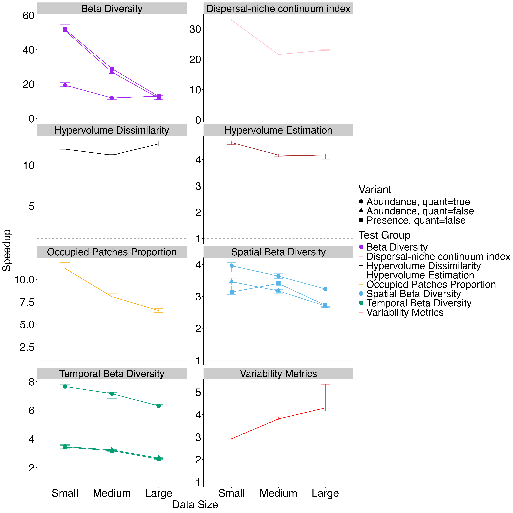

Benchmarking Results
Computational Resources
All benchmarks were performed on the same machine to ensure consistent comparisons.
- CPU: Apple M4
- Number of Cores: 10
- Memory: 16GB RAM
- Operating System: macOS Tahoe 26.5.1
- Julia Version: 1.12.6
- R Version: 4.4.2
Benchmarking Methods
To assess the efficiency of MetaCommunityMetrics compared to equivalent R implementations, we benchmark our functions against their R counterparts, focusing on execution time and memory usage. The following tables summarize the benchmark results based on 100 samples each.
We tested using datasets of three sizes:
- Large (53,352 observations)
- Medium (26,676 observations, 50% of the size of the large dataset)
- Small (5,325 observations, 10% of the size of the large dataset)
The large dataset is the sample data included with MetaCommunityMetrics, accessible via load_sample_data(). The small and medium datasets can be accessed here.
Each function was benchmarked using 100 samples in both BenchmarkTools.jl in Julia and bench::mark() in R to ensure robust statistical sampling. For memory usage comparisons:
In
Julia, we report thememory estimatefromBenchmarkTools.jl, which measures bytes allocated for a given expression per sample.In
R, we report themem_allocmetric frombench::mark(), which tracks R heap allocation per sample.
According to documentation, the Julia metric measures total memory allocation during execution, while the R metric specifically tracks heap allocations within the R runtime, excluding "memory allocated outside the R heap, e.g., by malloc() or new directly." Due to differences in language implementation and measurement methodology, direct numerical comparisons between languages should be interpreted with caution.
Speedup Summary
Below is a plot showing the speedup of all benchmarked functions across the three datasets (small, medium and large). Speedup is calculated as the R median execution time divided by the Julia median execution time. Median speedup and its confidence interval of each comparison is shown. The grey dashed line shows where speedup equals to 1, that is both R and Julia's implementations require the same amount of time. The calcualation of beta diversity has two variants: quant = true (abundance data is used) and quant = false(occurence data is used).

Benchmarking Results in Details
All times are in millisecond (ms), and memory is in mebibytes (MiB). All values are rounded up to 4 decimal places.
Median Execution Time and Speedup Values
Bold text indicates the test cases with maximum and minimum speedup values. 95% confidence interval of the speedup is reported.
| TestCase | Data Size | Julia | R | Speedup | Lower CI | Upper CI |
|---|---|---|---|---|---|---|
| Beta Diversity (Abundance, quant=true) | Large | 0.1812 | 2.4174 | 13.3375 | 12.0799 | 14.5377 |
| Beta Diversity (Abundance, quant=true) | Medium | 0.1114 | 1.3655 | 12.2583 | 11.4627 | 12.8396 |
| Beta Diversity (Abundance, quant=true) | Small | 0.0595 | 1.1525 | 19.3566 | 18.6617 | 20.9457 |
| Beta Diversity (Abundance, quant=false) | Large | 0.0177 | 0.2096 | 11.8243 | 10.8779 | 12.4595 |
| Beta Diversity (Abundance, quant=false) | Medium | 0.0106 | 0.2756 | 25.9352 | 24.2356 | 27.1469 |
| Beta Diversity (Abundance, quant=false) | Small | 0.0065 | 0.3219 | 49.2100 | 46.2983 | 52.4379 |
| Beta Diversity (Presence, quant=false) | Large | 0.0163 | 0.2101 | 12.9270 | 12.3420 | 13.4511 |
| Beta Diversity (Presence, quant=false) | Medium | 0.0106 | 0.3090 | 29.2013 | 28.0925 | 30.1846 |
| Beta Diversity (Presence, quant=false) | Small | 0.0065 | 0.3300 | 51.0969 | 48.4746 | 56.4341 |
| Spatial Beta Diversity (Abundance, quant=true) | Large | 2.7329 | 9.2670 | 3.3909 | 3.3290 | 3.4431 |
| Spatial Beta Diversity (Abundance, quant=true) | Medium | 2.4153 | 9.2043 | 3.8109 | 3.7377 | 3.8663 |
| Spatial Beta Diversity (Abundance, quant=true) | Small | 2.1866 | 8.8448 | 4.0450 | 3.9465 | 4.0956 |
| Spatial Beta Diversity (Abundance, quant=false) | Large | 2.5410 | 6.9715 | 2.7436 | 2.6972 | 2.7788 |
| Spatial Beta Diversity (Abundance, quant=false) | Medium | 2.1578 | 7.1675 | 3.3217 | 3.2773 | 3.3751 |
| Spatial Beta Diversity (Abundance, quant=false) | Small | 2.0421 | 6.7469 | 3.3039 | 3.2016 | 3.4660 |
| Spatial Beta Diversity (Presence, quant=false) | Large | 2.5390 | 6.9638 | 2.7427 | 2.7186 | 2.7809 |
| Spatial Beta Diversity (Presence, quant=false) | Medium | 2.1149 | 7.2182 | 3.4130 | 3.3462 | 3.4824 |
| Spatial Beta Diversity (Presence, quant=false) | Small | 1.8978 | 6.6972 | 3.5290 | 3.3934 | 3.6422 |
| Temporal Beta Diversity (Abundance, quant=true) | Large | 8.1492 | 53.3016 | 6.5407 | 6.4556 | 6.6366 |
| Temporal Beta Diversity (Abundance, quant=true) | Medium | 7.5846 | 54.3208 | 7.1620 | 6.8459 | 7.2578 |
| Temporal Beta Diversity (Abundance, quant=true) | Small | 6.9116 | 52.5342 | 7.6009 | 7.3612 | 7.7708 |
| Temporal Beta Diversity (Abundance, quant=false) | Large | 3.6115 | 9.7690 | 2.7050 | 2.6708 | 2.7459 |
| Temporal Beta Diversity (Abundance, quant=false) | Medium | 2.9339 | 9.6720 | 3.2966 | 3.2556 | 3.3588 |
| Temporal Beta Diversity (Abundance, quant=false) | Small | 2.5361 | 9.0186 | 3.5561 | 3.4488 | 3.6306 |
| Temporal Beta Diversity (Presence, quant=false) | Large | 3.5785 | 9.3899 | 2.6240 | 2.5947 | 2.6491 |
| Temporal Beta Diversity (Presence, quant=false) | Medium | 2.9062 | 9.6286 | 3.3131 | 3.2565 | 3.3883 |
| Temporal Beta Diversity (Presence, quant=false) | Small | 2.4861 | 9.0206 | 3.6285 | 3.4909 | 3.7086 |
| Dispersal-niche continuum index | Large | 907.4077 | 12894.3232 | 14.2101 | 14.1180 | 14.3277 |
| Dispersal-niche continuum index | Medium | 798.0111 | 12608.5208 | 15.7999 | 15.7294 | 15.8767 |
| Dispersal-niche continuum index | Small | 194.3358 | 3376.0879 | 17.3724 | 17.2196 | 17.5250 |
| Occupied Patches Proportion | Large | 1.2972 | 8.5893 | 6.6216 | 6.4433 | 6.8796 |
| Occupied Patches Proportion | Medium | 1.0354 | 8.3506 | 8.0648 | 7.7983 | 8.4388 |
| Occupied Patches Proportion | Small | 0.6840 | 7.9086 | 11.5627 | 10.8227 | 12.2746 |
| Variability Metrics | Large | 22.5348 | 103.5960 | 4.5972 | 4.4800 | 5.7010 |
| Variability Metrics | Medium | 13.9600 | 52.2772 | 3.7448 | 3.6965 | 3.8230 |
| Variability Metrics | Small | 4.9041 | 14.0789 | 2.8708 | 2.8454 | 2.9271 |
| Hypervolume Estimation | Large | 0.0077 | 0.0307 | 3.9814 | 3.8569 | 4.0704 |
| Hypervolume Estimation | Medium | 0.0064 | 0.0264 | 4.1418 | 4.0791 | 4.1708 |
| Hypervolume Estimation | Small | 0.0059 | 0.0266 | 4.4970 | 4.4214 | 4.5571 |
| Hypervolume Dissimilarity | Large | 0.0131 | 0.1395 | 10.6629 | 10.4523 | 11.0205 |
| Hypervolume Dissimilarity | Medium | 0.0099 | 0.1109 | 11.1792 | 11.0556 | 11.2418 |
| Hypervolume Dissimilarity | Small | 0.0096 | 0.1125 | 11.6639 | 11.3601 | 11.7950 |
Memory Usage
Benchmarked using Large Dataset
Bold text indicates the test case with the biggest memory usage difference between Julia and R.
| TestCase | Julia | R |
|---|---|---|
| Beta Diversity (Abundance, quant=true) | 0.4395 | 0.3757 |
| Beta Diversity (Abundance, quant=false) | 0.0843 | 0.1252 |
| Beta Diversity (Presence, quant=false) | 0.0843 | 0.1252 |
| Spatial Beta Diversity (Abundance, quant=true) | 4.0204 | 4.1093 |
| Spatial Beta Diversity (Abundance, quant=false) | 3.5614 | 2.6637 |
| Spatial Beta Diversity (Presence, quant=false) | 3.5614 | 2.6637 |
| Temporal Beta Diversity (Abundance, quant=true) | 17.0817 | 16.8787 |
| Temporal Beta Diversity (Abundance, quant=false) | 5.8182 | 5.1676 |
| Temporal Beta Diversity (Presence, quant=false) | 5.8182 | 5.1676 |
| Dispersal-niche continuum index | 803.5484 | 77.7877 |
| Occupied Patches Proportion | 1.9796 | 1.9928 |
| Variability Metrics | 12.6061 | 60.2264 |
| Hypervolume Estimation | 0.0118 | 0.0022 |
| Hypervolume Dissimilarity | 0.0198 | 0.0145 |
Benchmarked using Medium Dataset
The test case with the biggest memory usage difference between Julia and R is highligthed.
| TestCase | Julia | R |
|---|---|---|
| Beta Diversity (Abundance, quant=true) | 0.2507 | 0.0357 |
| Beta Diversity (Abundance, quant=false) | 0.0520 | 0.0798 |
| Beta Diversity (Presence, quant=false) | 0.0520 | 0.0798 |
| Spatial Beta Diversity (Abundance, quant=true) | 2.4864 | 2.2737 |
| Spatial Beta Diversity (Abundance, quant=false) | 2.0302 | 1.8307 |
| Spatial Beta Diversity (Presence, quant=false) | 2.0302 | 1.8307 |
| Temporal Beta Diversity (Abundance, quant=true) | 15.4706 | 16.2510 |
| Temporal Beta Diversity (Abundance, quant=false) | 4.2870 | 4.5399 |
| Temporal Beta Diversity (Presence, quant=false) | 4.2870 | 4.5399 |
| Dispersal-niche continuum index | 556.8265 | 59.2854 |
| Occupied Patches Proportion | 1.0577 | 1.3995 |
| Variability Metrics | 7.8169 | 32.5536 |
| Hypervolume Estimation | 0.0081 | 0.0011 |
| Hypervolume Dissimilarity | 0.0145 | 0.0077 |
Benchmarked using Small Dataset
The test case with the biggest memory usage difference between Julia and R is highligthed.
| TestCase | Julia | R |
|---|---|---|
| Beta Diversity (Abundance, quant=true) | 0.1217 | 0.0195 |
| Beta Diversity (Abundance, quant=false) | 0.0276 | 0.0444 |
| Beta Diversity (Presence, quant=false) | 0.0276 | 0.0444 |
| Spatial Beta Diversity (Abundance, quant=true) | 1.1605 | 1.2127 |
| Spatial Beta Diversity (Abundance, quant=false) | 0.7342 | 0.7697 |
| Spatial Beta Diversity (Presence, quant=false) | 0.7342 | 0.7697 |
| Temporal Beta Diversity (Abundance, quant=true) | 13.0601 | 15.4342 |
| Temporal Beta Diversity (Abundance, quant=false) | 3.0505 | 3.7231 |
| Temporal Beta Diversity (Presence, quant=false) | 3.0505 | 3.7231 |
| Dispersal-niche continuum index | 198.9489 | 11.1107 |
| Occupied Patches Proportion | 0.2843 | 0.4932 |
| Variability Metrics | 3.9590 | 10.5805 |
| Hypervolume Estimation | 0.0055 | 0.0003 |
| Hypervolume Dissimilarity | 0.0108 | 0.0014 |
Datasets used for this benchmark
Large Dataset
53352×12 DataFrame
Row │ Year Month Day Sampling_date_order plot Species Abundance Presence Latitude Longitude standardized_temperature standardized_precipitation
│ Int64 Int64 Int64 Int64 Int64 String3 Int64 Int64 Float64 Float64 Float64 Float64
───────┼──────────────────────────────────────────────────────────────────────────────────────────────────────────────────────────────────────────────────────
1 │ 2010 1 16 1 1 BA 0 0 35.0 -110.0 0.829467 -1.4024
2 │ 2010 1 16 1 2 BA 0 0 35.0 -109.5 -1.12294 -0.0519895
3 │ 2010 1 16 1 4 BA 0 0 35.0 -108.5 -0.409808 -0.803663
4 │ 2010 1 16 1 8 BA 0 0 35.5 -109.5 -1.35913 -0.646369
5 │ 2010 1 16 1 9 BA 0 0 35.5 -109.0 0.0822 1.09485
⋮ │ ⋮ ⋮ ⋮ ⋮ ⋮ ⋮ ⋮ ⋮ ⋮ ⋮ ⋮ ⋮
53348 │ 2023 3 21 117 9 SH 0 0 35.5 -109.0 -0.571565 -0.836345
53349 │ 2023 3 21 117 10 SH 0 0 35.5 -108.5 -2.33729 -0.398522
53350 │ 2023 3 21 117 12 SH 1 1 35.5 -107.5 0.547169 1.03257
53351 │ 2023 3 21 117 16 SH 0 0 36.0 -108.5 -0.815015 0.95971
53352 │ 2023 3 21 117 23 SH 0 0 36.5 -108.0 0.48949 -1.59416
53342 rows omittedMedium Dataset
26676×12 DataFrame
Row │ Year Month Day Sampling_date_order plot Species Abundance Presence Latitude Longitude standardized_temperature standardized_precipitation
│ Int64 Int64 Int64 Int64 Int64 String3 Int64 Int64 Float64 Float64 Float64 Float64
───────┼──────────────────────────────────────────────────────────────────────────────────────────────────────────────────────────────────────────────────────
1 │ 2015 7 18 56 12 PM 0 0 35.5 -107.5 -1.30965 0.967859
2 │ 2016 8 6 66 13 SF 0 0 36.0 -110.0 1.45692 1.77253
3 │ 2017 2 25 71 21 SF 0 0 36.5 -109.0 -1.50086 0.993311
4 │ 2018 5 19 82 16 PB 0 0 36.0 -108.5 -1.2202 0.684295
⋮ │ ⋮ ⋮ ⋮ ⋮ ⋮ ⋮ ⋮ ⋮ ⋮ ⋮ ⋮ ⋮
26673 │ 2010 11 6 8 13 BA 0 0 36.0 -110.0 -1.05336 -0.250324
26674 │ 2013 9 14 36 12 NA 0 0 35.5 -107.5 0.213222 0.12
26675 │ 2023 2 18 116 12 DS 0 0 35.5 -107.5 -0.217475 0.042571
26676 │ 2014 11 22 49 13 PF 0 0 36.0 -110.0 0.613491 -1.17076
26668 rows omittedSmall Dataset
5335×12 DataFrame
Row │ Year Month Day Sampling_date_order plot Species Abundance Presence Latitude Longitude standardized_temperature standardized_precipitation
│ Int64 Int64 Int64 Int64 Int64 String3 Int64 Int64 Float64 Float64 Float64 Float64
──────┼──────────────────────────────────────────────────────────────────────────────────────────────────────────────────────────────────────────────────────
1 │ 2015 7 18 56 12 PM 0 0 35.5 -107.5 -1.30965 0.967859
2 │ 2016 8 6 66 13 SF 0 0 36.0 -110.0 1.45692 1.77253
3 │ 2017 2 25 71 21 SF 0 0 36.5 -109.0 -1.50086 0.993311
4 │ 2018 5 19 82 16 PB 0 0 36.0 -108.5 -1.2202 0.684295
⋮ │ ⋮ ⋮ ⋮ ⋮ ⋮ ⋮ ⋮ ⋮ ⋮ ⋮ ⋮ ⋮
5332 │ 2013 11 2 37 13 RF 0 0 36.0 -110.0 2.07639 2.72841
5333 │ 2018 11 10 88 6 PH 0 0 35.0 -107.5 -0.197006 0.842547
5334 │ 2018 3 24 80 2 DS 0 0 35.0 -109.5 -0.920093 -0.276074
5335 │ 2014 4 26 42 7 PH 0 0 35.5 -110.0 0.848755 -0.247144
5327 rows omittedRemarks
- For
DNCI_multigroup_result, 100 permutations per sample are used in both theJuliaandRimplementation, andparallelComputingwas set to beTRUEwhen benchmarkingDNCImper:::DNCI_multigroup()inR. This means the R implementation distributes permutations across multiple cores, reducing the peak memory footprint per core, which likely contributes to the substantially lower memory usage reported for R compared to Julia. Additionally, direct memory comparisons should be interpreted with caution as Julia reports total memory allocated during execution while R only tracks heap allocations.